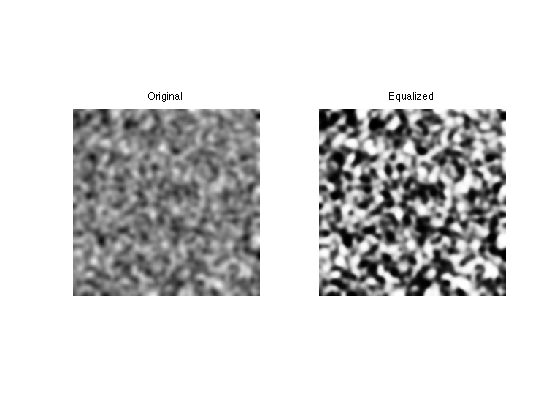
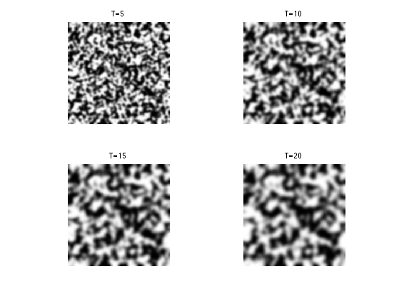
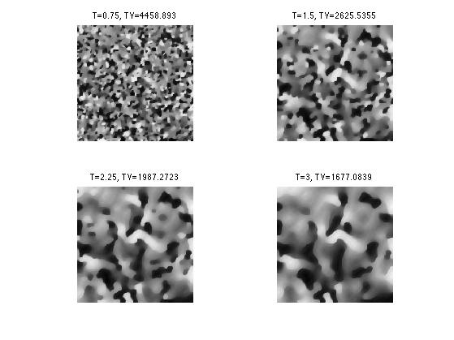

\[
\newcommand{\NN}{\mathbb{N}}
\newcommand{\CC}{\mathbb{C}}
\newcommand{\GG}{\mathbb{G}}
\newcommand{\LL}{\mathbb{L}}
\newcommand{\PP}{\mathbb{P}}
\newcommand{\QQ}{\mathbb{Q}}
\newcommand{\RR}{\mathbb{R}}
\newcommand{\VV}{\mathbb{V}}
\newcommand{\ZZ}{\mathbb{Z}}
\newcommand{\FF}{\mathbb{F}}
\newcommand{\KK}{\mathbb{K}}
\newcommand{\UU}{\mathbb{U}}
\newcommand{\EE}{\mathbb{E}}
\newcommand{\Aa}{\mathcal{A}}
\newcommand{\Bb}{\mathcal{B}}
\newcommand{\Cc}{\mathcal{C}}
\newcommand{\Dd}{\mathcal{D}}
\newcommand{\Ee}{\mathcal{E}}
\newcommand{\Ff}{\mathcal{F}}
\newcommand{\Gg}{\mathcal{G}}
\newcommand{\Hh}{\mathcal{H}}
\newcommand{\Ii}{\mathcal{I}}
\newcommand{\Jj}{\mathcal{J}}
\newcommand{\Kk}{\mathcal{K}}
\newcommand{\Ll}{\mathcal{L}}
\newcommand{\Mm}{\mathcal{M}}
\newcommand{\Nn}{\mathcal{N}}
\newcommand{\Oo}{\mathcal{O}}
\newcommand{\Pp}{\mathcal{P}}
\newcommand{\Qq}{\mathcal{Q}}
\newcommand{\Rr}{\mathcal{R}}
\newcommand{\Ss}{\mathcal{S}}
\newcommand{\Tt}{\mathcal{T}}
\newcommand{\Uu}{\mathcal{U}}
\newcommand{\Vv}{\mathcal{V}}
\newcommand{\Ww}{\mathcal{W}}
\newcommand{\Xx}{\mathcal{X}}
\newcommand{\Yy}{\mathcal{Y}}
\newcommand{\Zz}{\mathcal{Z}}
\newcommand{\al}{\alpha}
\newcommand{\la}{\lambda}
\newcommand{\ga}{\gamma}
\newcommand{\Ga}{\Gamma}
\newcommand{\La}{\Lambda}
\newcommand{\Si}{\Sigma}
\newcommand{\si}{\sigma}
\newcommand{\be}{\beta}
\newcommand{\de}{\delta}
\newcommand{\De}{\Delta}
\renewcommand{\phi}{\varphi}
\renewcommand{\th}{\theta}
\newcommand{\om}{\omega}
\newcommand{\Om}{\Omega}
\renewcommand{\epsilon}{\varepsilon}
\newcommand{\Calpha}{\mathrm{C}^\al}
\newcommand{\Cbeta}{\mathrm{C}^\be}
\newcommand{\Cal}{\text{C}^\al}
\newcommand{\Cdeux}{\text{C}^{2}}
\newcommand{\Cun}{\text{C}^{1}}
\newcommand{\Calt}[1]{\text{C}^{#1}}
\newcommand{\lun}{\ell^1}
\newcommand{\ldeux}{\ell^2}
\newcommand{\linf}{\ell^\infty}
\newcommand{\ldeuxj}{{\ldeux_j}}
\newcommand{\Lun}{\text{\upshape L}^1}
\newcommand{\Ldeux}{\text{\upshape L}^2}
\newcommand{\Lp}{\text{\upshape L}^p}
\newcommand{\Lq}{\text{\upshape L}^q}
\newcommand{\Linf}{\text{\upshape L}^\infty}
\newcommand{\lzero}{\ell^0}
\newcommand{\lp}{\ell^p}
\renewcommand{\d}{\ins{d}}
\newcommand{\Grad}{\text{Grad}}
\newcommand{\grad}{\text{grad}}
\renewcommand{\div}{\text{div}}
\newcommand{\diag}{\text{diag}}
\newcommand{\pd}[2]{ \frac{ \partial #1}{\partial #2} }
\newcommand{\pdd}[2]{ \frac{ \partial^2 #1}{\partial #2^2} }
\newcommand{\dotp}[2]{\langle #1,\,#2\rangle}
\newcommand{\norm}[1]{|\!| #1 |\!|}
\newcommand{\normi}[1]{\norm{#1}_{\infty}}
\newcommand{\normu}[1]{\norm{#1}_{1}}
\newcommand{\normz}[1]{\norm{#1}_{0}}
\newcommand{\abs}[1]{\vert #1 \vert}
\newcommand{\argmin}{\text{argmin}}
\newcommand{\argmax}{\text{argmax}}
\newcommand{\uargmin}[1]{\underset{#1}{\argmin}\;}
\newcommand{\uargmax}[1]{\underset{#1}{\argmax}\;}
\newcommand{\umin}[1]{\underset{#1}{\min}\;}
\newcommand{\umax}[1]{\underset{#1}{\max}\;}
\newcommand{\pa}[1]{\left( #1 \right)}
\newcommand{\choice}[1]{ \left\{ \begin{array}{l} #1 \end{array} \right. }
\newcommand{\enscond}[2]{ \left\{ #1 \;:\; #2 \right\} }
\newcommand{\qandq}{ \quad \text{and} \quad }
\newcommand{\qqandqq}{ \qquad \text{and} \qquad }
\newcommand{\qifq}{ \quad \text{if} \quad }
\newcommand{\qqifqq}{ \qquad \text{if} \qquad }
\newcommand{\qwhereq}{ \quad \text{where} \quad }
\newcommand{\qqwhereqq}{ \qquad \text{where} \qquad }
\newcommand{\qwithq}{ \quad \text{with} \quad }
\newcommand{\qqwithqq}{ \qquad \text{with} \qquad }
\newcommand{\qforq}{ \quad \text{for} \quad }
\newcommand{\qqforqq}{ \qquad \text{for} \qquad }
\newcommand{\qqsinceqq}{ \qquad \text{since} \qquad }
\newcommand{\qsinceq}{ \quad \text{since} \quad }
\newcommand{\qarrq}{\quad\Longrightarrow\quad}
\newcommand{\qqarrqq}{\quad\Longrightarrow\quad}
\newcommand{\qiffq}{\quad\Longleftrightarrow\quad}
\newcommand{\qqiffqq}{\qquad\Longleftrightarrow\qquad}
\newcommand{\qsubjq}{ \quad \text{subject to} \quad }
\newcommand{\qqsubjqq}{ \qquad \text{subject to} \qquad }
\]
Texture Synthesis with PDEs
This numerical tour explores image synthesis using diffusion equation. You might first have a look at the numerical tours
on Heat diffusion and Total variation minimization that introduces these two notions.
Contents
Installing toolboxes and setting up the path.
You need to download the following files: signal toolbox and general toolbox.
You need to unzip these toolboxes in your working directory, so that you have toolbox_signal and toolbox_general in your directory.
For Scilab user: you must replace the Matlab comment '%' by its Scilab counterpart '//'.
Recommandation: You should create a text file named for instance numericaltour.sce (in Scilab) or numericaltour.m (in Matlab) to write all the Scilab/Matlab command you want to execute. Then, simply run exec('numericaltour.sce'); (in Scilab) or numericaltour; (in Matlab) to run the commands.
Execute this line only if you are using Matlab.
getd = @(p)path(p,path);
Then you can add the toolboxes to the path.
getd('toolbox_signal/');
getd('toolbox_general/');
Heat Flow Synthesis
It is possible to synthesis a cloudy image by a simple smoothing of a noise. Histogram equalization helps to maintain the
contrast.
n = 256;
We blur a noisy image to have a cloud texture.
M1 = perform_blurring(randn(n,n), 15);
We impose a flat histogram to enhance the contrast.
x = linspace(0,1, n*n);
M2 = perform_hist_eq(M1,x);
clf;
imageplot(M1, 'Original', 1,2,1);
imageplot(M2, 'Equalized', 1,2,2);

Exercice 1: (check the solution) Perform a synthesis by running a heat diffusion, starting with a random noise a time T=0. At each step of the diffusion, perform an histogram equation to keep the contrast of the texture.
exo1;

Total Variation Constraints
The total variation minimization reduce the number of edges and is usually used as a denoising method. It can also be used
to perform synthesis of singular images.
The total variation roughly measures the number of edges present in an image.
M = rescale( load_image('lena', n) );
Gr = grad(M);
tv = sum(sum( sqrt(sum(Gr.^2,3)), 2 ), 1);
disp(strcat(['Total variation of M = ' num2str(tv) '.']));
Total variation of M = 3988.3181.
Exercice 2: (check the solution) Starting from an initial noise image, perform a total variation minimization. At each step of the descent, perform an histogram
equalization so that the texture has a flat histogram.
exo2;

Exercice 3: (check the solution) Perfrom a synthesis that mixes both TV minimization (to reduce the TV norm) and wavelet histogram equalization (to control
the distribution of singularities). Stop the iterations when the synthesized image has the same TV norm as the original one.
exo3;